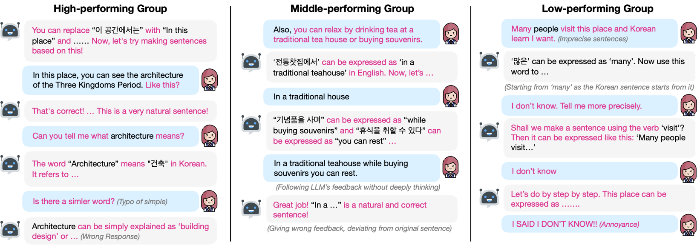
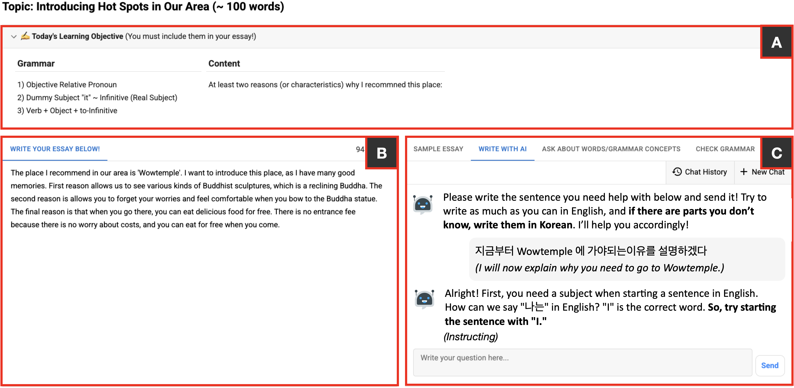
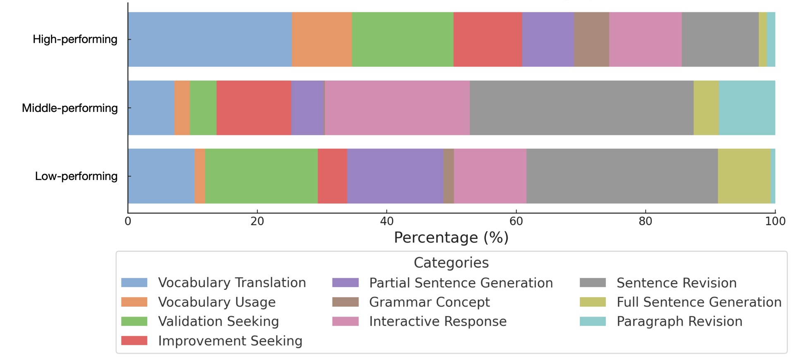

CHI 2026 · Barcelona, Spain
TL;DR
We deployed WriteAid, an LLM-based writing assistant, with 157 eighth-grade EFL students in South Korea over six weeks (14,863 query-response pairs). LLM scaffolding improved in-class grammatical accuracy, but step-by-step guidance backfired for lower-proficiency students — fostering dependency and demotivation — while masking their struggles from teachers.

Large language models (LLMs) are promising tools for scaffolding students' English writing skills, but their effectiveness in real-time K-12 classrooms remains underexplored. Addressing this gap, our study examines the benefits and limitations of using LLMs as real-time learning support, considering how classroom constraints, such as diverse proficiency levels and limited time, affect their effectiveness.
We conducted a deployment study with 157 eighth-grade students in a South Korean middle school English class over six weeks. Our findings reveal that while scaffolding improved students' ability to compose grammatically correct sentences, this step-by-step approach demotivated lower-proficiency students and increased their system reliance. We also observed challenges to classroom dynamics, where extroverted students often dominated the teacher's attention, and the system's assistance made it difficult for teachers to identify struggling students.
Based on these findings, we discuss design guidelines for integrating LLMs into real-time writing classes as inclusive educational tools.
WriteAid is an LLM-based writing support tool deployed as a technology probe in real-world K-12 EFL classrooms. Students interact through a chat-based interface with four tabs — Sample Essay, Write with AI, Ask About Words/Grammar, and Check Grammar — supporting Korean–English code-mixed input. The LLM is prompted with six scaffolding strategies (Van de Pol et al., 2010) and selects the most appropriate one to guide students step-by-step in Korean.


Lower-proficiency students outsourced higher-order writing tasks
High-performing students delegated lower-order tasks — vocabulary translation (25.3%) and validation seeking (15.7%) — to the LLM, freeing themselves to focus on higher-order writing. In contrast, low-performing students used the LLM for full sentence generation (8.2%) and partial sentence generation (14.9%), outsourcing the core skills of applying grammatical rules and creating text.
Step-by-step scaffolding demotivated lower-proficiency students
High-performing students exhibited negative affective behaviors (annoyance, confusion) only 3.8 times per session, while middle- and low-performing students showed 12.2 and 11.4 times, respectively. Low-proficiency students most frequently responded with "I don't know" even when the LLM was actively guiding them — with 69.2% of negative affect emerging in the latter half of interactions, suggesting accumulated frustration under time pressure.
LLM effectively improved grammatical accuracy during in-class activities
Of 632 sentences constructed with LLM assistance, 82.3% were grammatically correct — including 86.2% in the low-performing group. This suggests that LLM-based scaffolding can serve as an effective tool for improving grammatical accuracy regardless of proficiency level.
LLM-assisted sentences were not retained by lower-proficiency students
When assessed independently 2–3 weeks later, high-performing students correctly incorporated 65.8% of LLM-assisted sentences into their final essays. Middle- and low-performing students did so only 37.8% and 14.0% of the time, respectively — suggesting that increased reliance on the system did not translate into durable grammar or vocabulary learning.
The roles of the LLM and the teacher were not clearly defined
Students would often ask questions to the teacher first, even with simple questions that the LLM could have easily handled. This pattern led the teacher to constantly step in and redirect them by saying, "Have you tried asking the model first?" The ambiguity of the LLM's role led to inefficiencies in both directions — students were unsure when to use the LLM, and the teacher's attention was repeatedly drawn to lower-order queries that the system was designed to handle.
LLM provided scalable support and reduced the gap in task completion
The teacher could redirect students asking simple questions by saying "Try asking the LLM like this," enabling faster responses to repetitive lower-level questions. The teacher noted having "more time to walk around the classroom and check students' progress." The LLM also helped more students complete tasks, reducing the gap between top and bottom performers.
LLM became a more approachable alternative for introverted students — at a social cost
Students who were already less inclined to speak up became even less likely to do so when an approachable alternative was available. Rather than asking the teacher or more proficient classmates, introverted students turned to the LLM — a channel with lower anxiety and no social stakes.
While increased accessibility to question-asking is a benefit, it also reduced opportunities for collaborative learning. Peer learning is important in EFL education: students with lower proficiency benefit from articulating what they find difficult, while higher-proficiency students build confidence by helping peers.
LLM introduced new dimensions of social interaction
Students occasionally discussed LLM responses with peers, compared outputs, and shared excitement — "It gave me a compliment!" These episodes show that integrating LLM in real-time classrooms can introduce a new dimension of social interaction, suggesting opportunities for novel forms of peer engagement around AI outputs.
Syntax-Aware, Cross-Lingual Scaffolding
LLMs should recognize errors rooted in L1 syntax (e.g., subject omission in Korean) and guide students in restructuring ideas according to the target language, rather than simply translating.
Dynamic, Proficiency-Aware Scaffolding
Systems should adapt not only to proficiency but also to student motivation, ability to process feedback, and real-time time constraints. Withholding answers can be counterproductive for lower-proficiency students under time pressure.
Clearly Define LLM and Teacher Roles
Position the LLM as the first responder for lower-order queries (spelling, vocabulary, basic grammar), freeing the teacher for higher-order concerns like content development and personalized instruction.
Real-Time Teacher Dashboard
Provide teachers with real-time analytics on common student errors, engagement levels, and signs of over-reliance, ensuring all students' struggles remain visible and actionable.
We publicly release the fully anonymized student-LLM interaction dataset to support future research. The dataset contains 14,863 query-response pairs across 3,733 conversation threads from 133 eighth-grade EFL students, collected over two semesters (Spring and Fall 2024).
The dataset includes queries in English, Korean, and code-mixed format, covering all four WriteAid features: sentence construction, vocabulary/grammar explanation, and grammar revision.
@inproceedings{10.1145/3772318.3791517,
author = {Myung, Junho and Lim, Hyunseung and Oh, Hana and Jin, Hyoungwook and Kang, Nayeon and Ahn, So-Yeon and Hong, Hwajung and Oh, Alice and Kim, Juho},
title = {When Scaffolding Breaks: Investigating Student Interaction with LLM-Based Writing Support in Real-Time K-12 EFL Classrooms},
year = {2026},
isbn = {9798400722783},
publisher = {Association for Computing Machinery},
address = {New York, NY, USA},
url = {https://doi.org/10.1145/3772318.3791517},
doi = {10.1145/3772318.3791517},
booktitle = {Proceedings of the 2026 CHI Conference on Human Factors in Computing Systems},
articleno = {838},
numpages = {18},
keywords = {Large Language Models (LLMs), Scaffolding, K-12 Education, English as a Foreign Language (EFL), Human-AI Collaboration},
series = {CHI '26}
}